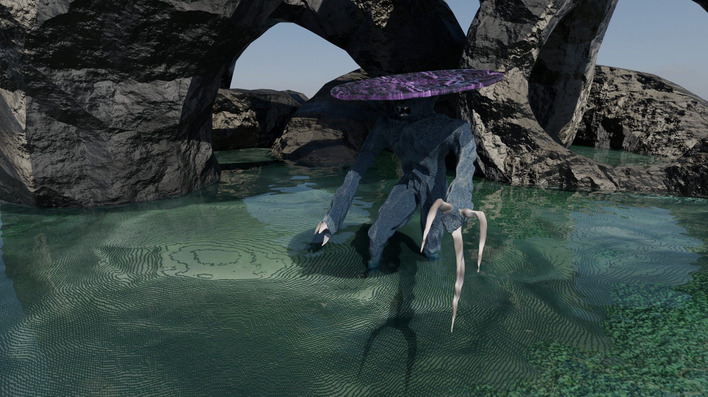
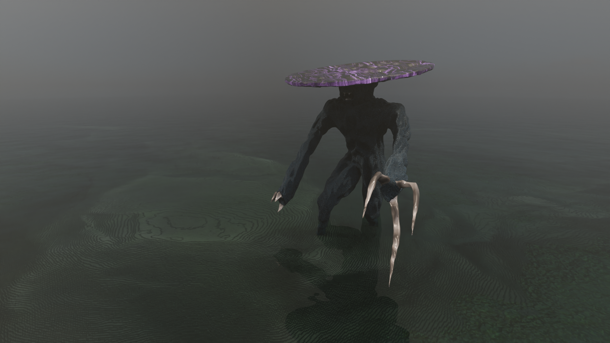
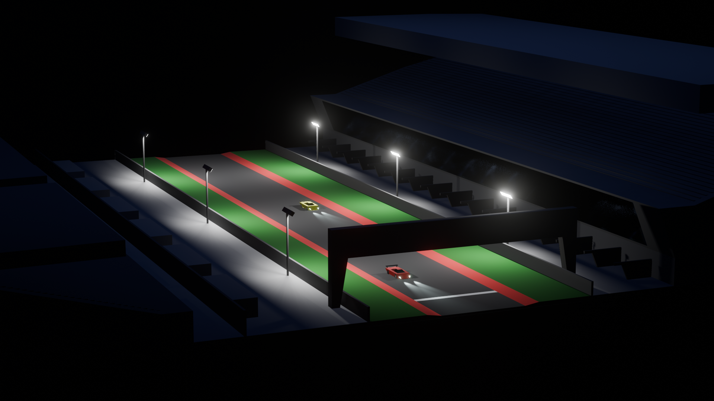
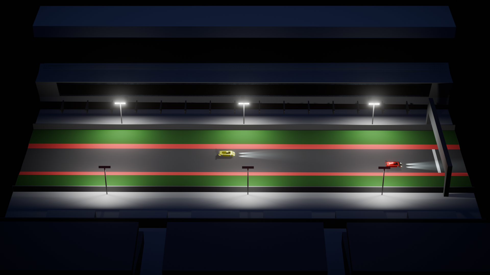
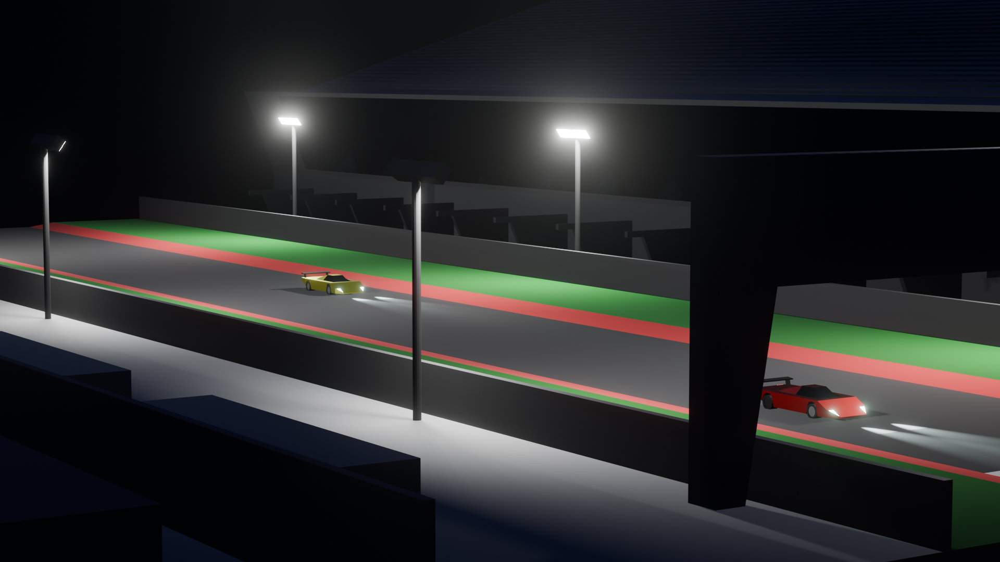
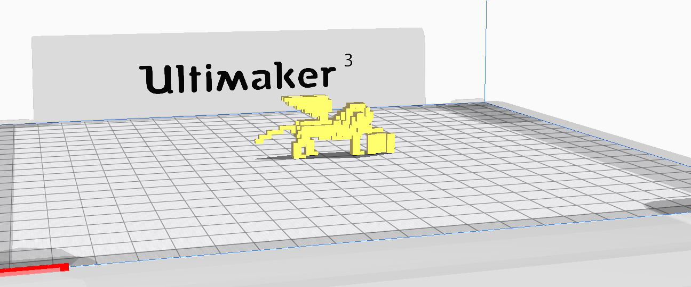
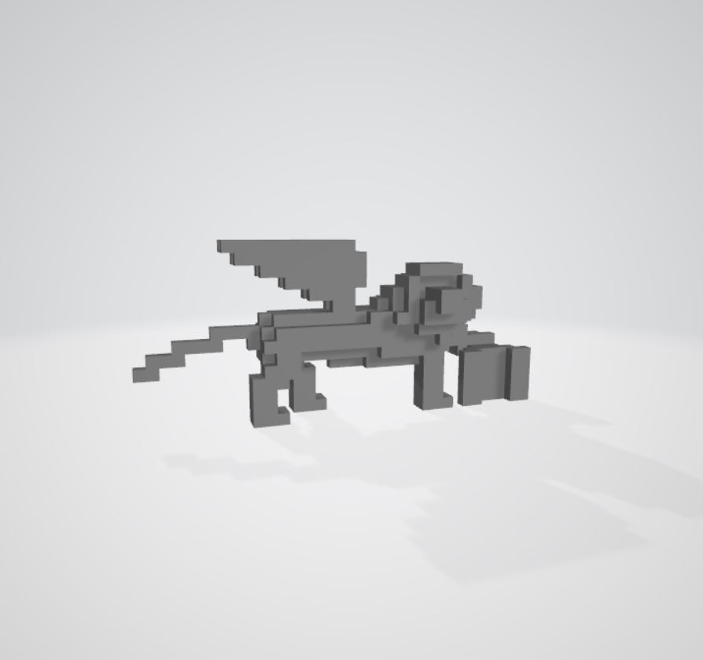
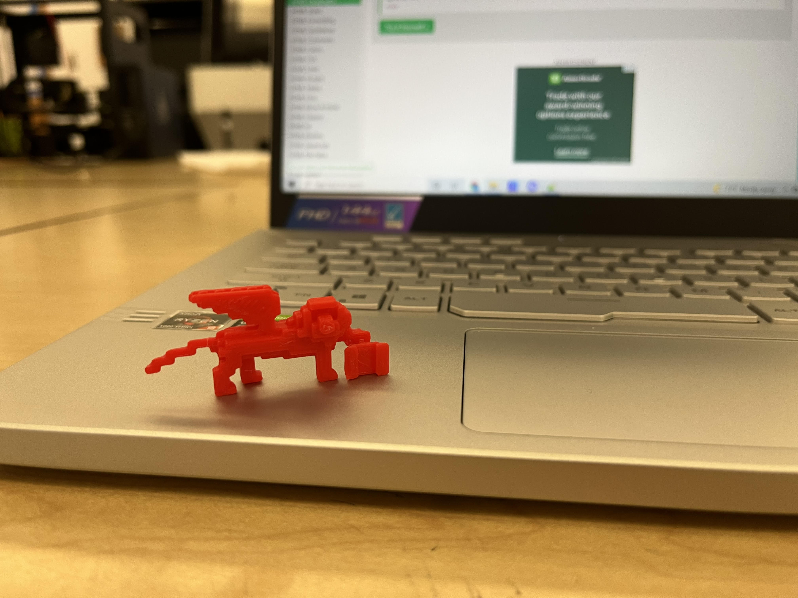

Down below is the artwork I created using the 3D modeling techniques taught from the Art 102 class, taught by Professor Christopher Cobillas-Ottinger, and Art 74 class, taught by Professor James Morgan. Including new concept arts I created for the Art 3 class.
Animation Project, 2024, Art 102
For this project, we had to create a 15-20 second animation using Blender which goes through the conflict-resolution narrative cycle.
Improbable Object Project, 2024, Art 102
For this project, we had to create a creature that lives with certain defined enviromental adaptations which gives its form and shape. In addition to the render we had to give a synopsys to the creature and the enviroment it lives in, mine was: The creature I have created in this project is of a vertebrate and bi-pedal species with the intelligence of an orca. The diet of this creature is carnivore and photosynthesis, the creature hunts for other creatures to eat by hunting in water and also has a slime top of the head that absorbs light for energy. The climate in which the creature lives is temperate but closer to the colder side, sitting around 45 Fahrenheit. In terms of atmosphere, it is earth-like but has sporadic fog and rain which brings a higher humidity and thickness. The gravity is a little lighter than earth’s and the environment, in which the creature lives in, is primarily fluid but has some rocky areas with an ocean floor..


Low Poly Landfill, 2024, Art 102
For this project, we had to create a low poly scene that has at least 6 objects/buildings/structures. Use basic colors and lighting techniques, rendered with EEVEE in Blender.



Future Thrive, 2023, Art 3
In this artwork, I tackle the concept of AI and civilization development in the context of human society. The rapid increase of AI usage and development raised a lot of concerns for me considering the future of civilization. Using Blender, I kitbashed assets and images and touched the images up in Photoshop to create futuristic scenes where the viewers follow an AI powered robot who explores two cities in the year 2200. Through these explorations, we as viewers are introduced to what future civilizations could look like with the evolution of AI.
Tokyo, Japan
Since Tokyo is known for its high technological development in today’s age, in the year 2200 I picture Tokyo to have success in integrating robots into society and have even more tech developments like holograms for signs and hovercrafts.
The Line, Saudi Arabia
A current concept that Saudi Arabia wants to build, The Line is a multi-mile long building that has a city inside. I picture that this project would be built and have high development by the year 2200. The city's filled with buildings and skyscrapers that are all inside the giant building.
It Radiates from Within, 2023, Art 3
For this project, we as the artists had to create a concept art for a physical art installation on emotion. My artwork concept is grounded on the topic of self love and how love radiates from inside out. I used a blender and modeled the human-like figures, textured them, added lights, and created a display room.
The models have lights that glow showing how the love people have within radiates to others around them. The figures are purposefully low-poly in order to make the figures not resemble one person’s features or stature. I made them in that way to make it inclusive to any person that views the artwork and can picture themselves as the figures.
30 Silver Coins, 2023, Art 3
For this project, we had to create a concept art based on the topic of the 7 Deadly Sins. I used blender to create the hand model, coins, and scene to create an animation video.
In the video, it depicts the biblical moment of Judas accepting 30 silver coins to betray Jesus. This represents the sin of Greed because Judas valued money higher than Jesus’ life.
Reference/Inspiration
3D Printed Lion, 2021, Art 74
For this project, we had to build something of cultural significance to us in Minecraft then print it in a 3d printer. In Minecraft, I built the Lion of Saint Mark which is culturally significant to me because it is an important symbol of Venice, a city in the region of Italy where my Mom and her family is from. After building the Lion, I extracted it using Mineways and exported it as a 3d file. Using the Cura Ultimaker, I printed the first draft and made some changes. Then I used the Lulzbot Mini 2 to print the final draft.


3d Models
These two images are the lion 3d model in the Cura Ultimaker 3.0 3d printing software and the 3d object view of the lion model in the .3mf file type.
First Print
This is the first print and draft of the lion 3d model, using the Cura Ultimaker and red filament.

Final Print
This is the final print and draft of the lion 3d model, using the Lulzbot Mini 2 and black filament.
Minecraft Build
This is the Minecraft build I made using the reference/inspiration image. Later I took the world file from Minecraft and extracted the build and converted it into a 3d model using the Mineways application.